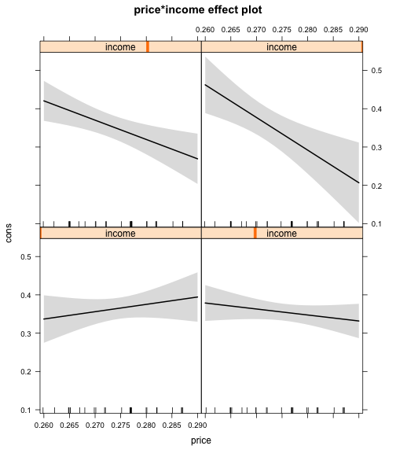

Functions, fitted results
null
Plotting coefficients
- How should we present our findings?
- A move away from tables into figures.
Coefficient plots
library(coefplot)
reg1 <- lm(cty~cyl+class+as.factor(year),mpg)
coefplot(reg1,intercept = F)
Coefficient plots

Effects package
library(effects)
library(Ecdat)
data(Icecream)
r1 <- lm(formula = cons ~ price * income, data = Icecream)
eff1 <- effect(r1,term="price*income")
plot(eff1)
plot(eff1,multiline=T)
Effects package

## [1] "term" "formula"
## [3] "response" "variables"
## [5] "fit" "x"
## [7] "x.all" "model.matrix"
## [9] "mod.matrix.all" "data"
## [11] "discrepancy" "offset"
## [13] "fitted.rounded" "fitted"
## [15] "partial.residuals.raw" "partial.residuals.adjusted"
## [17] "x.var" "vcov"
## [19] "se" "lower"
## [21] "upper" "confidence.level"
## [23] "transformation"

Three way plot
out <- lm(y~a*b*c,threeway)
r <- effects::effect(out,term="a*b*c")
r1 <- data.frame(r)
ggplot(r1,aes(x=a,y=fit,group=as.factor(b)))+facet_wrap(~c)+geom_line()+geom_ribbon(aes(ymax=upper,ymin=lower,fill=as.factor(b)),alpha=.3)
Three way plot
out <- lm(y~a*b*c,threeway)
r <- effects::effect(out,term="a*b*c")
r1 <- data.frame(r)
ggplot(r1,aes(x=a,y=fit))+facet_wrap(~c)+geom_line()+geom_ribbon(aes(ymax=upper,ymin=lower),alpha=.3)+facet_grid(b~c)
Effects package
- Create a coefplot of the effect of main effects of price and income on icecreame consumption
- For a model with the interaction effects of price*consumption, Extract the output from effects::effect, and replot the 2 way interaction effects and 95 percent confidence intervals in ggplot, so that you can combine confidence intervals and 2 lines in 1 plot
- Let's try three-way interactions use threeway.sav in the data folder, which is a three factorial experiment (a,b,c) on some dependent variable y. First plot it with the built in plot, but extract the output and plot it in ggplot. To make this work, you'll probably have to reshape the data so it's in long format.
load(url("http://cdn.rawgit.com/ylelkes/R_wav/master/data/threeway.RData"))
Effects package
- Create a coefplot of the effect of main effects of price and income on icecreame consumption
r1 <- lm(formula = cons ~ price * income, data = Icecream)
library(coefplot)
coefplot(r1)
Effects package
- For a model with the interaction effects of price*consumption, Extract the output from effects::effect, and replot the 2 way interaction effects and 95 percent confidence intervals in ggplot, so that you can combine confidence intervals and 2 lines in 1 plot
r1 <- lm(formula = cons ~ price * income, data = Icecream)
library(effects)
ef1 <- effects::effect(r1,term="price * income")
df1 <- data.frame(ef1)
library(ggplot2)
ggplot(df1,aes(x=price,y=fit,lty=as.factor(income),fill=as.factor(income)))+geom_line()+geom_ribbon(aes(x=price,ymin=lower,ymax=upper),alpha=.3)
Effects package
- Let's try three-way interactions use threeway.sav in the data folder, which is a three factorial experiment (a,b,c) on some dependent variable y. First plot it with the built in plot, but extract the output and plot it in ggplot. To make this work, you'll probably have to reshape the data so it's in long format.
load(url("http://cdn.rawgit.com/ylelkes/R_wav/master/data/threeway.RData"))
r1 <- lm(formula = y ~ a * b * c, data = threeway)
library(effects)
ef1 <- effects::effect(r1,term="a*b*c")
df1 <- data.frame(ef1)
df1$b
library(ggplot2)
ggplot(df1,aes(x=a,y=fit,lty=as.factor(b),fill=as.factor(b)))+geom_line()+geom_ribbon(aes(x=a,ymin=lower,ymax=upper),alpha=.3)+facet_wrap(~c)
Generating predicting values
- A number of ways to get a predicted value (and error)
- predict(), effects()
- Zelig is useful b/c it can handle a bunch of different models
library(Zelig)
library(Ecdat)
z1 <- zelig(formula =cons ~ price * income, data = Icecream,model = "normal")
setz1 <- setx(z1,price=.5)
s.out <- sim(z1, x = setz1)
z1 <- zelig(formula =cons ~ price * income, data = Icecream,model = "normal")
setz1 <- setx(z1,price=.5,income=40:50)
s.out <- sim(z1, x = setz1)
summary(s.out)
library(Zelig)
library(Ecdat)
z1 <- zelig(formula =cons ~ price * income, data = Icecream,model = "normal")
setx1 <- setx(z1,price=.5)
setx2 <- setx(z1,price=.75)
s.out <- sim(z1, x = setx1,x1 = setx2)
summary(s.out)
Exercises
Download the following data, which looks at the relationship between cancer remssion and a variety of variables
Using a logit model, regress remission on a variety of variables, including age and smoking habits.
Calculate predicted probabilites of remission for the youngest and oldest people in the dataset who are current smokers, former smokers, and never smokers, respectively.
Extract and plot the predicted probabilities and 95 percent confidence intervals.
Exercises
library(Zelig)
hdp <- read.csv("http://www.ats.ucla.edu/stat/data/hdp.csv")
m1 <- zelig(remission~Age*SmokingHx,data = hdp,model = "logit")
s1 <- setx(m1,Age=c(min(hdp$Age),max(hdp$Age)),SmokingHx=levels(hdp$SmokingHx))
predprobs <- sim(m1,s1)
forggplot <-
data.frame(
rbind(
unlist(predprobs[[1]]$stats[1]),
unlist(predprobs[[2]]$stats[1]),
unlist(predprobs[[3]]$stats[1]),
unlist(predprobs[[4]]$stats[1]),
unlist(predprobs[[5]]$stats[1]),
unlist(predprobs[[6]]$stats[1])
)
)
colnames(forggplot) <- c("Mean","SD","Median","Lower","Upper")
forggplot$smoking <- c("Current","Current","Former","Former","Never","Never")
forggplot$age<- c("Young","Old","Young","Old","Young","Old")
library(ggplot2)
ggplot(forggplot,aes(x=Mean,y=smoking))+geom_point()+facet_wrap(~age)+geom_errorbarh(aes(y=smoking,xmin=Upper,xmax=Lower))+xlab("Probability of Remission")